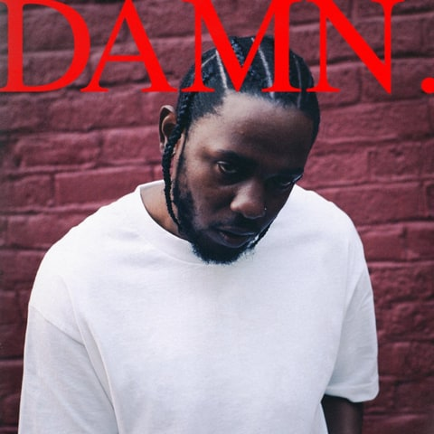

Album Review and Analysis

KENDRICK LAMAR |DAMN
Many times, with the release of a new album, the hype is so intense that by the time the album is released, your hopes are so high and you expect so much that you are bound to be disappointed. Did Kendrick Lamar's highly anticipated album, DAMN live up to the hype? We already know Kendrick Lamar as an established and gifted rapper who rose to prominence with his 2011 mixtape Section.80 and his spectacular 2012 debut album Good Kid, M.A.A.D. City, as well as his critically acclaimed 2015 follow-up, To Pimp a Butterfly. What can we expect of his most recent release, DAMN? Let’s get into it…
The track “BLOOD” opens with Kendrick Lamar encountering a blind woman who tries to assist him with finding something she “lost.” Lamar ends up getting shot by this woman, and while this is believed to allude to biblical “consequences of damnation,” it could also be a metaphor for the rap industry and how Lamar “tried lift the black artists” but was instead, repaid in an attempt to end his life. However, in context with overarching themes of critiquing traditional Judeo-Christian beliefs and exploring ideas of “deadly” sinfulness, as referenced in the songs “YAH,” “PRIDE,” “LUST,” “HUMBLE,” and “FEAR,” the consequences of damnation do tie into what Kendrick is trying to communicate.
Self-preservation and personal isolation are other overarching themes referenced throughout the album in songs like “DNA,” “ELEMENT,” “FEEL,” “LOYALTY,” and “XXX,” where at times Lamar declares “ain’t nobody prayin’ for me” as if to say, “your prayer is inaction, and your inaction is futile.” He comes off fiercely dedicated to his family and in “LOVE,” this shows as Lamar mulls over his deep feelings for, presumably, his wife-to-be, Whitney Alford. Lamar clearly wants to live on his own terms and define his beliefs by his own interpretation as seen on the track “GOD.” He likens God to success as if God is an experience or presence rather than a personal being. In "DUCKWORTH,"" Lamar tackles the topic of fate and destiny in his own experience where his choices led to an outcome that would not have come to fruition had he chose another path.
What I liked. Kendrick Lamar’s flow is as strong as ever on this album as with his previous releases. The energy is kept up the ENTIRE album. Much like Kendrick Lamar’s live shows, there is no part where he does not give his all. I especially enjoy this on high-energy tracks like “DNA,” “ELEMENT” (the chorus is bound to become iconic), and “HUMBLE.” While some may argue that this album is not as conceptual as GKMC and TPAB, it does have a concept that is realized; the “wickedness or weakness” dichotomy. Are Kendrick Lamar’s choices a result of intentional, psychological decisions meant to harm and impede on another person’s autonomy, or is it a result of an uncontrollable flaw in character; his “DNA?”
The scattered nature of the songs seems intentional, as it accurately describes the life a person leads when faced with the consequences of their thoughts, feelings, and actions. This is why the track “DUCKWORTH” is so powerful and an important way to end the album. In telling this story about how Kendrick came to work with Anthony “Top Dawg” Tiffith--the founder of the independent record label Top Dawg Entertainment--he reveals how we navigate our moral actions in an ambiguous manner that, in the end, is meant to preserve our personhood. “XXX,” featuring the vocals of U2 frontman, Bono, also notably tackles this theme of self-preservation where Kendrick states: “ain’t no black power when your baby killed by a coward.” He is essentially stating that he is willing to forgo any general efforts to improve his community just to protect and preserve his lineage and legacy through his offspring.
I also enjoyed the production. While it is not as cohesive as with previous releases, it was fantastic how Lamar worked with producers that allowed him to play with different sounds, beats, melodies, and intonations to indicate different moods that influence how the listener will perceive his words. The tracks that made a particular strong impression on me were “DNA,” “ELEMENT,” “LOYALTY,” “PRIDE,” “XXX” and “GOD” because with lyrics, the artist’s delivery and production the songs were executed seamlessly. Producers such as Sounwave, Top Dawg, James Blake, Mike WILL Made-It, and others all worked together to provide a dynamic soundtrack to accompany the story told by Lamar. They were in tune with what works for Lamar and did not try to turn his music and his artistry into something it is not. This was an authentic record, through and through.
What I didn’t like. The production is not as cohesive as previous albums. I liked how GKMC and TPAB had a similar flavor that tied tracks together, sonically. The Hebrew Israelite theme was not my favorite either. I feel as though that group has beliefs that are not rooted in reality and it comes off preachy, unnecessarily extreme, and judgmental.
Highly Recommended. Kung-Fu Kenny does it again. I think that this album is accessible to everyone, and its success has shown that Kendrick knows how to take a personal experience and communicate it in a way that everyone who listens can experience it. What is great about this album is that it does not rely on a trend or fad to sell a message or idea of wealth and success. It is personal, yet somehow, universal in its dealings with the internal struggle of “wickedness and weakness” “good vs. evil,” “light vs. dark.”
« Previous Next »